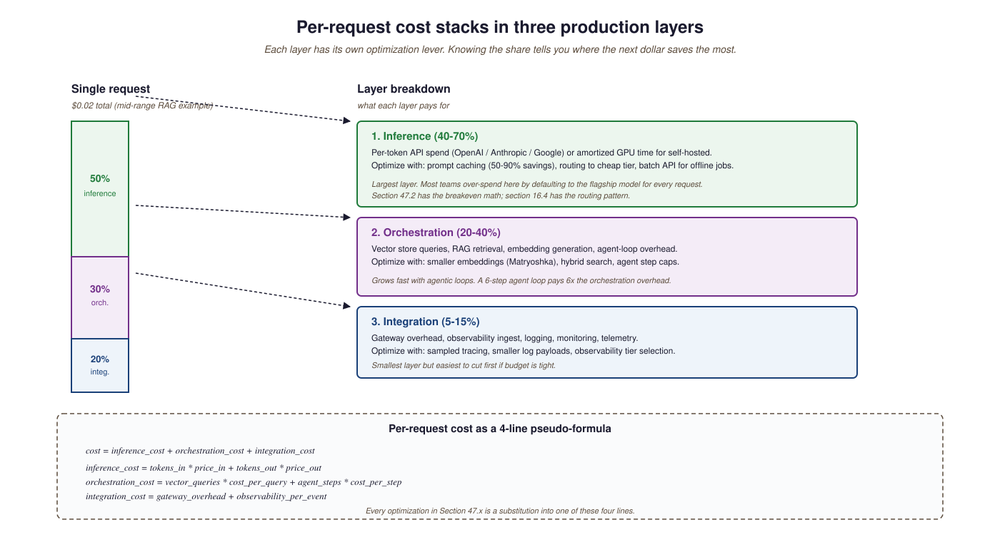

ROI for AI products is harder than for SaaS because the unit cost varies with the user, the prompt, and the model. This section gives you a measurable framing that ties model-level decisions to business-level outcomes.
Whether an LLM project actually returns money is a question that most teams answer too late, or never. The capability is obvious in a demo; the value is not, until you measure it. This chapter is about measurement: building unit economics for an LLM product, computing the ROI of an internal-productivity deployment, and attributing value cleanly when the model is one of many tools in the user's workflow.
This section sets the framing. ROI for LLM projects has three peculiarities that surprise teams used to other software ROI math: the unit cost varies by request shape (long-context queries cost 10-100x more), the value is often diffuse (saved time across many users, not a single big outcome), and the baseline keeps shifting (model prices drop, so a project that was unprofitable last year may be profitable now). The frameworks below address each.
69.1.691.1 The three value categories
Almost every LLM project's value falls into one of three categories. They are measured differently:
- Productivity / time-saved: the model helps existing employees do their job faster. Measured by sampled time studies before and after deployment. Hard to capture in invoice-line terms; easy to dispute. Gallup's research and BLS labor statistics are useful normalization references.
- Cost reduction: the model replaces or reduces a third-party cost (vendor consultants, outsourced operations, BPO). Measured by removed line items in the budget. Cleaner attribution but typically smaller absolute number.
- Revenue lift: the model produces or supports a new revenue stream, or improves conversion in an existing one. Measured with A/B testing against a baseline. Cleanest attribution but only available for customer-facing products.
69.1.691.2 Unit-cost decomposition
Every LLM request has a cost made of three parts: the model inference (per-token API cost or self-hosted amortized GPU time), the orchestration cost (vector store queries, RAG retrieval, agent loops), and the integration cost (logs, monitoring, gateway overhead). For most production systems the model inference is 40-70% of total per-request cost, the orchestration is 20-40%, and integration is 5-15%. The breakdown matters because optimizations target each layer differently; cache hits shrink inference cost dramatically, smaller embeddings shrink orchestration cost, and gateway tuning shrinks integration cost.

69.1.691.3 Comparing the value categories
| Category | Measurement method | Typical magnitude | Attribution risk |
|---|---|---|---|
| Productivity | Time studies, before/after | 5-30% per user | High (counterfactual) |
| Cost reduction | Removed budget line items | 10-50% of replaced cost | Low |
| Revenue lift | A/B testing | 1-15% conversion lift | Medium |
| Risk avoidance | Counterfactual modeling | Hard to quantify | Highest |
| Strategic optionality | Internal capability score | Not financial | Subjective |
The biggest measurement trap in 2026 is over-claiming productivity. "Saves users 30 minutes per day" sounds reasonable but is usually wrong: the user does not actually save the 30 minutes (they fill it with other work, or with browsing), and the time-saving estimate often comes from a survey, not a measurement. Microsoft's Copilot research documents the measurement methodology that works: log usage events, sample task completion times in a controlled study, attribute carefully. Anything else over-claims systematically.
If you fine-tuned a model and the training cost was \$50k, do not divide that by your year-1 request volume and add it to per-request unit cost. That math discourages cheap fine-tunes for new use cases. The right framing: capital costs (training, infra setup) amortize separately; per-request unit cost is operational only. Track capital ROI and operational unit cost on different ledgers, as you would with any other software product.
An internal-copilot deployment for a 500-engineer organization. Sampled time study (n=40) finds 22 minutes saved per engineer per day, translating to ~10% of an engineer's working week. Loaded-cost engineering salary \$200k/year. Year-1 productivity value: 500 × \$200k × 10% = \$10M. API + observability + ops costs at scale: ~\$1.2M/year. ROI: 8.3x. Caveats applied: time saved is a survey not a measurement (discount 50%), some engineers adopt slowly (discount further 20%), conservative estimate: \$4M value vs \$1.2M cost, 3.3x. This is the typical 2026 enterprise-copilot ROI shape; the survey-vs-measurement gap is the dominant uncertainty.
69.1.691.4 What this section commits to
The frameworks here are not novel; they are the standard ROI frameworks adapted to the specific peculiarities of LLM products. The peculiar parts (per-request variability, model-price drift, diffuse value) get most of the attention because that is where most teams get it wrong. Section 69.2 takes up the unit-cost calculations in detail: API vs self-hosted, breakeven analysis, and the cost-of-quality tradeoff between flagship and cheap-tier models. By the end of Chapter 69 the goal is a defensible spreadsheet that anchors every Part X project's funding case.